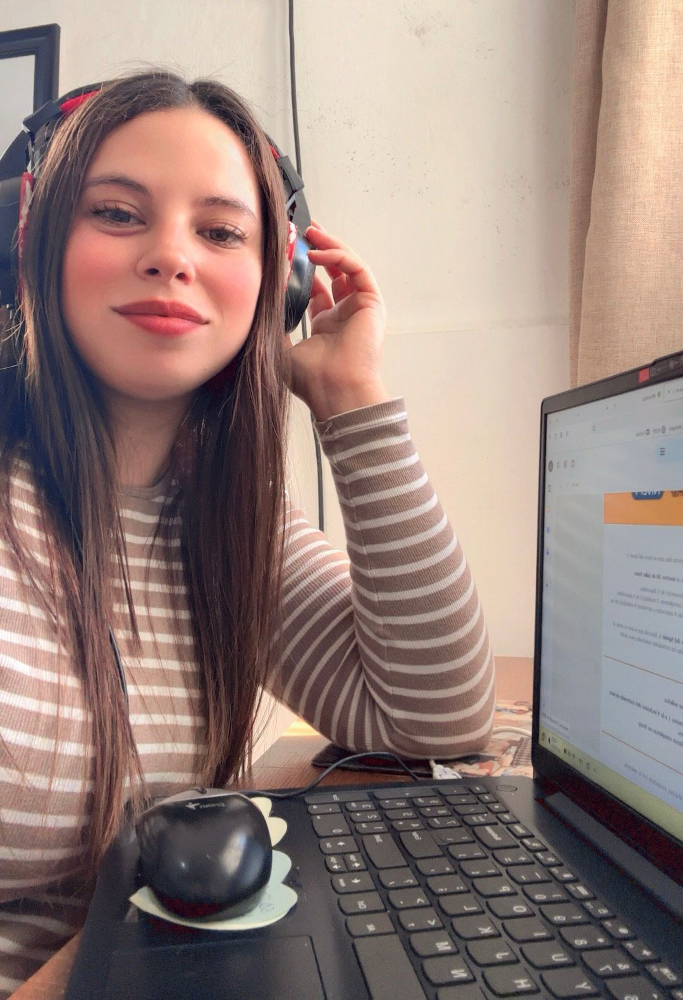

Trabajo en una empresa de informática hace tres años y me ha permitido descubrir una pasión oculta que nunca imaginé tener. Al principio, me cuestionaba mi lugar allí, preguntándome "¿Qué hago acá?", pero con el tiempo, el entorno y las tareas comenzaron a capturar mi interés. La fascinación por los procesos, la tecnología y la dinámica del trabajo en la informática han despertado en mi una curiosidad y entusiasmo que no esperaba. Este descubrimiento personal no solo enriquece mi vida laboral, sino que también me brinda nuevas oportunidades para crecer y desarrollarme en un campo que ahora me apasiona.
